Wolf_Crafts
Wolf_Crafts – обо мне
Привет! Мой ник в интернете - Wolf_Crafts. Я Украинка, и молодая художница.
Рисую я с конца мая 2025 года, и с тех пор рисую каждый день, всё чему хочу научиться — учусь сама, только по YouTube-туториалам. Школ, учителей и курсов у меня нет.
Я рисую в стиле аниме, в основном людей. Также умею рисовать волков (только в профиль), чуть чуть котов и драконов. Начиная с 27/10 учусь рисовать людей в профиль — и... пока выходит ужасно. Я хотела бы научиться рисовать руки лучше, возможно детально глаза, и хотела бы понять перспективу.
~~~ Техника и инструменты
Раньше рисовала на компьютере в Krita с планшетом для рисования.
С сентября 2025 года мне больше нравится традиционное рисование.
~~~ Процесс и вдохновение
Я всегда все свои арты делаю с воображения, референсы использовать не люблю. если же я все таки использую их, подписываю это где-то на картине, либо, если там забыла подписать, то когда выставляю работу онлайн - пишу это отдельно
Люблю рисовать фан-арты персонажей из игр (особенно Бравл Старс) и своих собственных персонажей.
Вдохновляюсь стилем других художников, например Hanacue (https://www.youtube.com/@hanacue).
~~~~ Организация работ
У меня на компьютере есть миллион таймплайсов и в 7 раз больше скетчей. На YouTube естьвидео-туториал "как рисовать анатомию тела" от меня ;) :
* **туториал по анатомии:** https://www.youtube.com/watch?v=obsGiHWsB_8
~~~~ Любимые вещи: рисовать фан-арты чужих и своих персонажей. играть в Бравл Старс (поэтому часто рисую персонажей по этой вселенной). включать музыку, когда рисую. Мне сложнее всего рисовать руки и левый глаз, особенно когда правый получается идеально, так что, так сказать, "любимая вещь" это рисовать персонажу челку. Люблю сладкое и фрукты, предпочитаю собак. Если и смотрю фильмы, то нравится смотреть комедии. обожаю еду из макдональдса, особенно - их коктейли (ммммм...)
~~~~ НЕ любимые вещи: овощи, чай, ужастики. нууу... есть и другие вещи, но мне немного лень их писать))
Мои лучшие работы
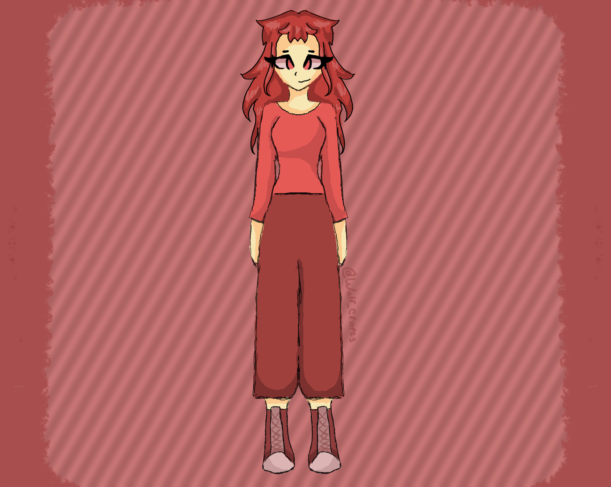
обожаю эту работу. одна из любимых
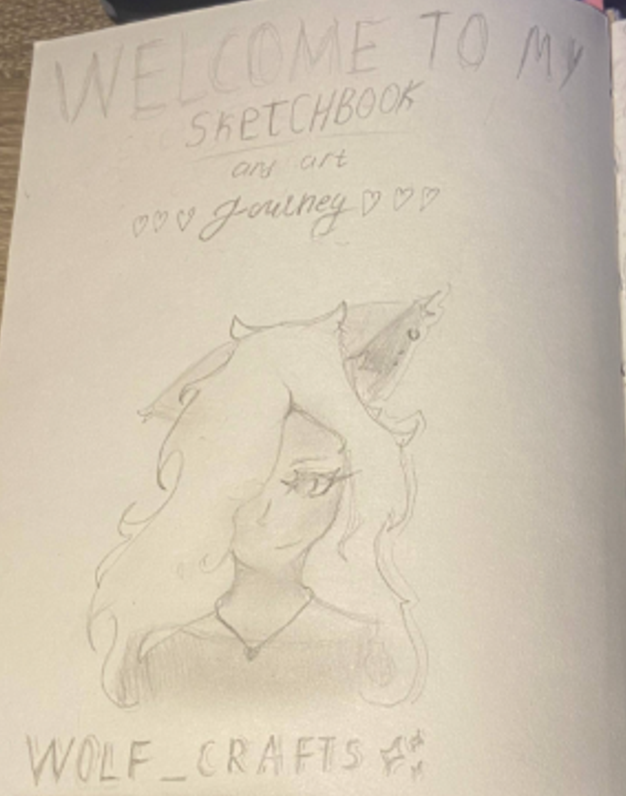
первая страница скетчбука... не скажу что лучшая работа, но одна из самых новых, и тех, которыми горжусь ;)
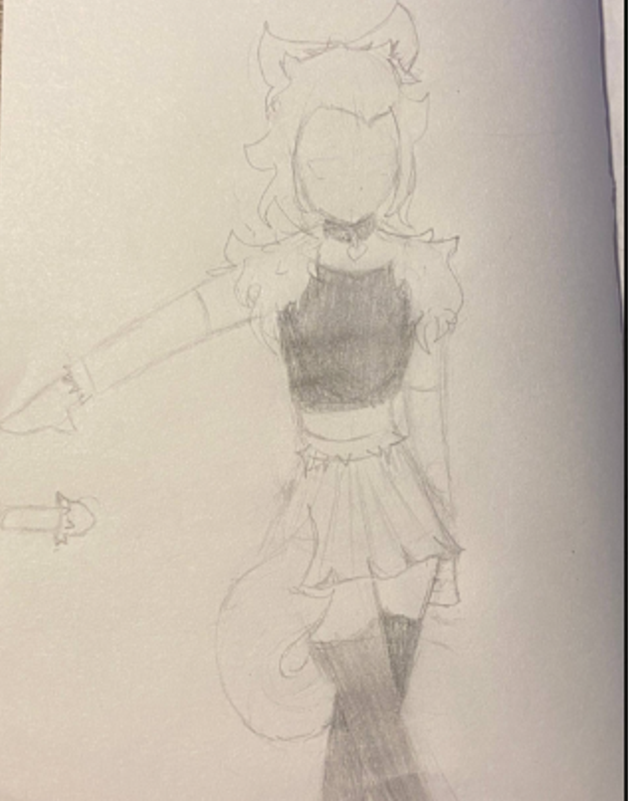
Мэлоди из Бравл Старс, рисунок еще не совсем доделан (смотрела только на 3D-модель, не срисовывала позу)
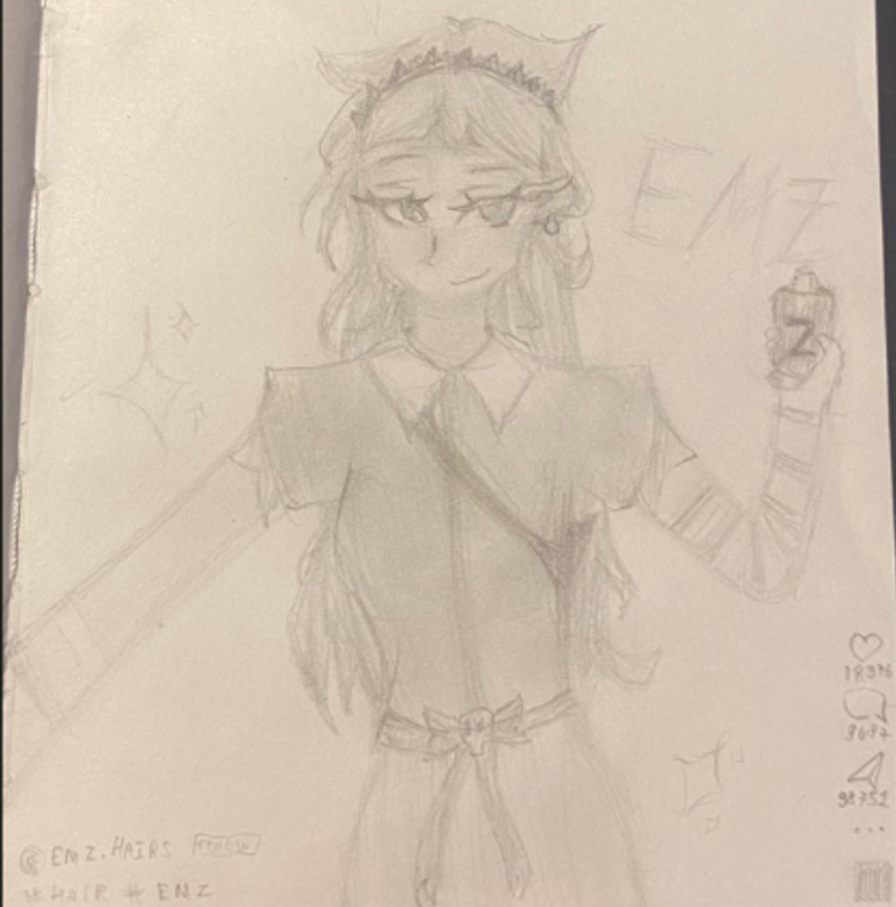
Эмз из Бравл Старс делает селфи (смотрела только на 3D модель, не срисовывала позу)
Старые работы
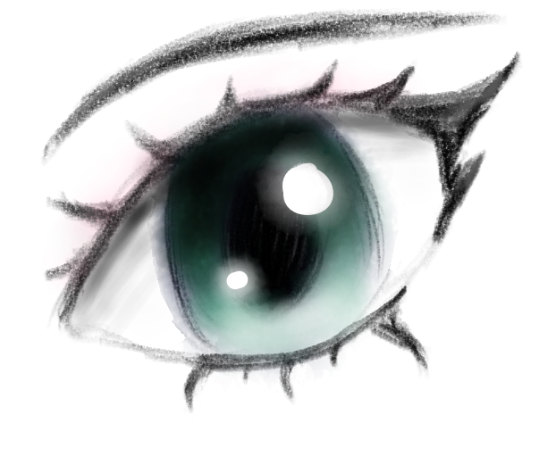
нарисовано без референсов, 01.06.2025
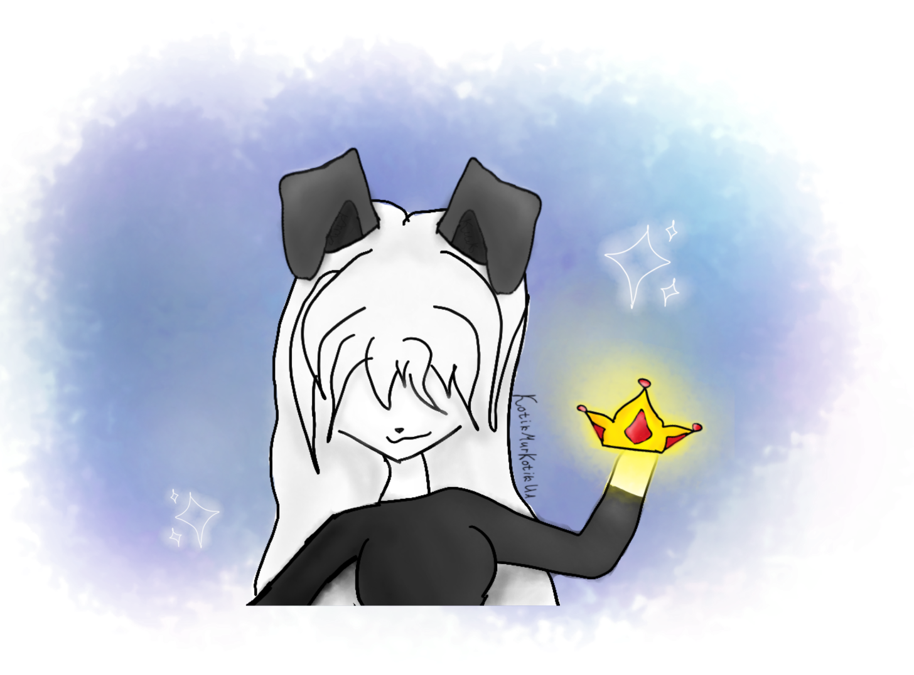
— персонаж из Roblox моей одноклассницы, её ник diorka. 21.07.2025
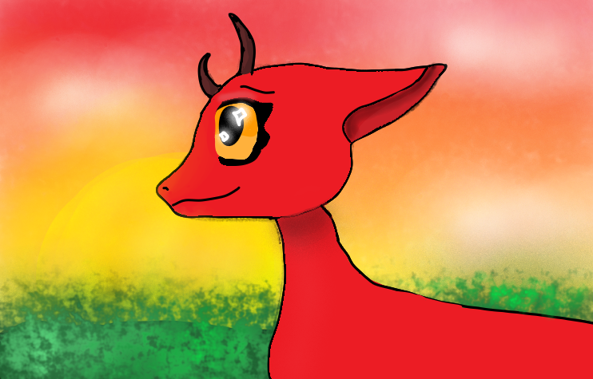
12.05.2025
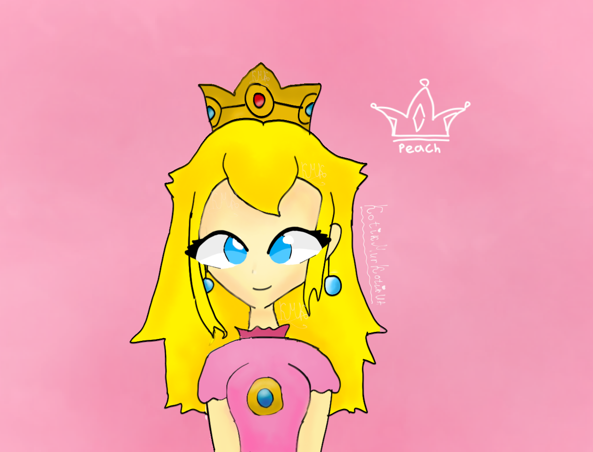
Принцесса Пич из Mario, 23.07.2025
Про рисунки
Когда я рисую на компьютере, то использую программу Krita. моя любимая кисть там - это самая обычная кисть. (хотя странно, там такой большой выбор...)
когда рисую на бумаге, то использую свой Скетчбук (который, кстати, я купила в Авроре) и карандаши бренда Faber-Castell.
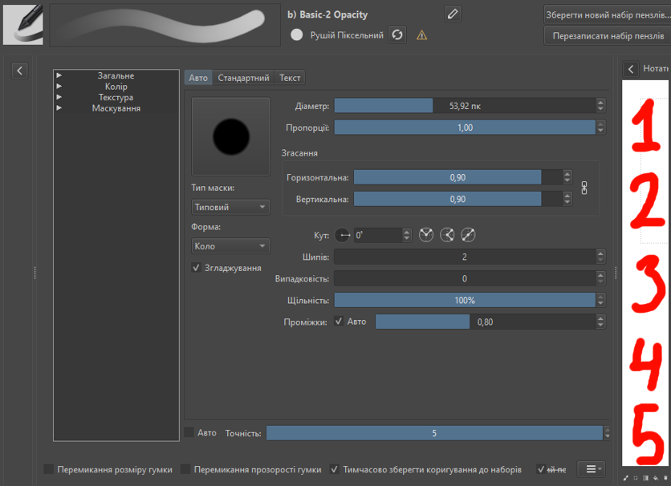
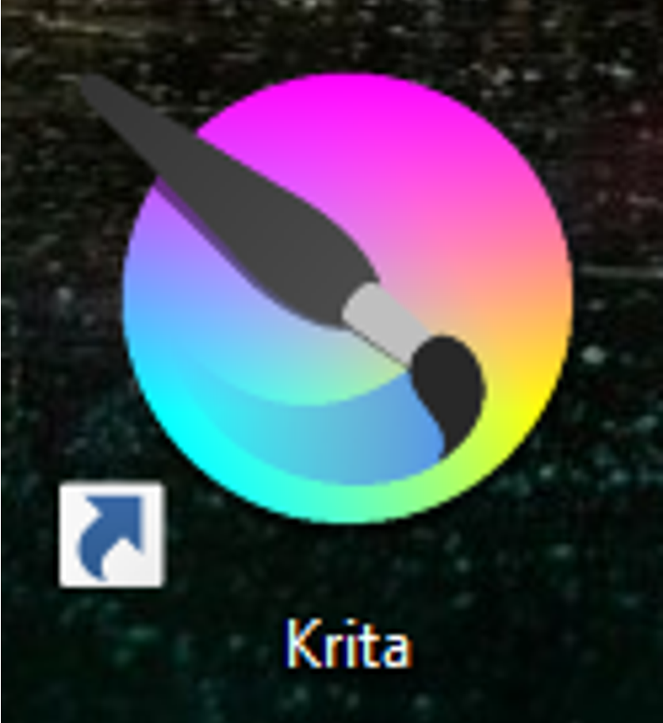
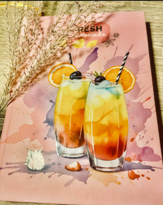
Контакты
Мой ютуб канал: https://www.youtube.com/@Wolf_Crafts